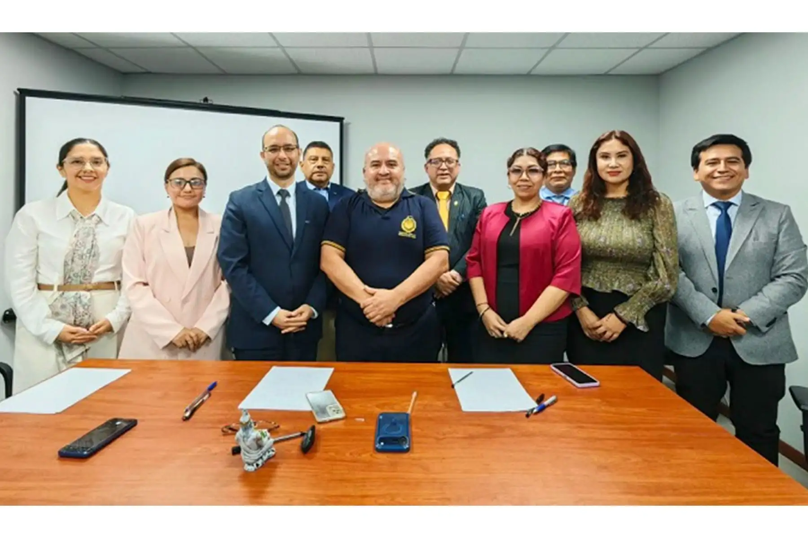

El Tercer Juzgado de Familia de Lima, a cargo de la jueza Roxana Isabel Palacios Yactayo, dictó la noche del viernes 18 de septiembre cuatro meses de internamiento preventivo para seis de los diez adolescentes investigados por la presunta violación sexual de un compañero de 16 años al interior de un bus escolar del Liceo Naval Almirante Guise. La medida fue solicitada por la Séptima Fiscalía de Familia de Lima Centro y se cumple en el Centro Juvenil de Diagnóstico y Rehabilitación de Lima, conocido históricamente como Maranguita, ubicado en el distrito de San Miguel.
La decisión judicial se produjo tras una sesión reservada en la que se escuchó la versión de los seis menores investigados, todos estudiantes del quinto año de secundaria del referido centro educativo. Previamente, el fiscal provincial Mariano de la Torre Hernández había requerido la medida con el fin de asegurar la presencia de los adolescentes durante las diligencias que restan en la investigación. Entre los principales elementos recabados figuran las declaraciones de los involucrados, los testimonios de efectivos policiales, el reconocimiento médico legal y el testimonio de la víctima recogido mediante Cámara Gesell.

Los seis adolescentes fueron trasladados bajo custodia policial desde la Comisaría de Familia hasta el Tercer Juzgado de Familia del Cercado de Lima. Foto: ANDINA/Braian Reyna
Los hechos que originaron la denuncia
La denuncia policial surgió tras el presunto ataque que sufrió el estudiante de cuarto año el pasado 15 de setiembre al interior de una unidad de transporte escolar. El hecho violento ocurrió durante el retorno del equipo escolar de futsal hacia la sede del colegio, ubicada en el distrito de San Borja. Según la información preliminar recogida por el Ministerio Público, la agresión habría ocurrido en el trayecto de regreso al plantel, cuando los estudiantes se desplazaban en el bus institucional. La víctima, un adolescente de 16 años, habría sido objeto de violencia sexual por parte de varios compañeros de quinto año.
Tras conocerse la denuncia, la Policía Nacional del Perú retuvo inicialmente a diez estudiantes como parte de las diligencias preliminares. De acuerdo con el Código de Responsabilidad Penal de Adolescentes, la detención de menores de edad, incluso en flagrancia, no debe superar las 24 horas, plazo que puede extenderse hasta 48 horas cuando se realizan las primeras diligencias fiscales. Durante ese periodo, los diez adolescentes fueron sometidos a evaluaciones individuales destinadas a determinar el nivel de participación de cada uno en los hechos denunciados.
La decisión de la jueza Palacios Yactayo
La jueza Roxana Isabel Palacios Yactayo, del Tercer Juzgado de Familia de la Corte Superior de Justicia de Lima, dispuso expresamente que los seis adolescentes sean conducidos de inmediato al Centro Juvenil de Diagnóstico y Rehabilitación de Lima, donde permanecerán durante los cuatro meses fijados por el juzgado. El traslado al centro juvenil se realizó pasadas las once de la noche del viernes, luego de que los menores salieran de la Comisaría de Familia en el Cercado de Lima en un bus policial custodiado.
El internamiento preventivo, según precisó el Poder Judicial, corresponde al plazo máximo previsto por ley para esta medida cautelar. Durante este periodo, la Fiscalía deberá avanzar en las pericias y actuaciones destinadas a precisar la participación que habría tenido cada adolescente en los hechos denunciados. Es importante subrayar que esta medida no constituye una sentencia condenatoria, sino una disposición cautelar dentro del proceso de responsabilidad penal juvenil que se sigue contra los investigados.
La resolución judicial se conoció después de que venciera el plazo de 48 horas de retención y luego de que el fiscal Mariano de la Torre Hernández culminara las principales diligencias preliminares, incluidas las entrevistas en Cámara Gesell. Fuentes judiciales indicaron que la decisión se sustentó en los indicios recogidos que vincularían a los seis adolescentes con la infracción a la ley penal, mientras que para los otros cuatro estudiantes la Fiscalía determinó que continuarán afrontando las investigaciones en libertad.

El Centro Juvenil de Diagnóstico y Rehabilitación de Lima, conocido como Maranguita, se ubica en el distrito de San Miguel. Foto: ANDINA
Medidas de protección a favor de la víctima
En paralelo, el Décimo Segundo Juzgado de Familia de Lima dictó diversas medidas de protección preventivas a favor del adolescente de 16 años agraviado. Entre las disposiciones figuran prohibir que los presuntos agresores utilicen espacios privados o redes sociales como WhatsApp y Facebook para comunicarse con la víctima o referirse a ella. Asimismo, se ordenó que los menores investigados reciban terapias psicológicas obligatorias como parte de las medidas dispuestas por el juzgado.
El órgano jurisdiccional también dispuso patrullajes preventivos semanales a cargo de la Comisaría de Familia de Lima en los alrededores del domicilio del estudiante agraviado. Estas medidas buscan resguardar la integridad física y emocional de la víctima mientras se desarrolla el proceso judicial. Según informó el Poder Judicial, la resolución también contempla la reserva de identidad del adolescente y el acompañamiento psicológico durante las diligencias que deba afrontar en el marco de la investigación.
¿Qué establece la ley para adolescentes investigados por agresión sexual?
- Marco legal: Código de Responsabilidad Penal de Adolescentes (Decreto Legislativo N.° 1348) y Libro IV del Código de los Niños y Adolescentes.
- Edad: Los investigados tienen 16 y 17 años, estudiantes de quinto año de secundaria.
- Internamiento preventivo: Plazo máximo de 150 días según el Código de Responsabilidad Penal de Adolescentes.
- Sanctión aplicable: Tras la Sentencia del Tribunal Constitucional 2/2026, corresponde el artículo 163.1 del D. Leg. N.° 1348, que contempla internación de uno a seis años para adolescentes de 16 y 17 años.
- Diferencia con adultos: Para adultos, el artículo 170 del Código Penal establece penas de 14 a 20 años por violación sexual, que se elevan de 20 a 26 años cuando intervienen dos o más sujetos.
Los otros cuatro adolescentes
De los diez adolescentes inicialmente retenidos, solo seis recibieron la medida de internamiento preventivo. Los otros cuatro fueron liberados tras vencerse el plazo legal de 48 horas de retención y continuarán afrontando las investigaciones en libertad, bajo las condiciones que establezca la Fiscalía. Según Jorge Petrozzi, abogado de la familia de la víctima, estos cuatro escolares no estarían comprendidos como participantes directos ni indirectos en la agresión denunciada, aunque sí serían parte de la investigación en calidad de testigos o por su presencia en el lugar de los hechos.
La Fiscalía deberá individualizar la responsabilidad de cada adolescente y determinar las medidas que correspondan de acuerdo con los elementos recogidos durante las diligencias. En el caso de los cuatro liberados, el proceso continuará bajo otras condiciones distintas al internamiento, lo que podría incluir medidas socioeducativas, presentación periódica ante la autoridad judicial o restricciones específicas, dependiendo de la evaluación individual de cada caso.
Reorganización del Liceo Naval
En medio del proceso judicial, el Gobierno oficializó la reorganización del Liceo Naval Almirante Guise mediante el Decreto Supremo N.° 016-2026-MINEDU. La norma dispone que el Ministerio de Educación asuma la conducción del centro educativo hasta el 31 de diciembre de 2027, con énfasis en reforzar la seguridad, la convivencia escolar y la prevención de situaciones de violencia. Esta medida responde a la necesidad de garantizar un entorno seguro para los estudiantes y de implementar protocolos efectivos de prevención y atención ante casos de violencia sexual.
La comunidad educativa del Liceo Naval ha expresado su preocupación por los hechos ocurridos y ha exigido que se esclarezcan los hechos con celeridad. El Ministerio de la Mujer y Poblaciones Vulnerables también se pronunció sobre el caso, señalando que tanto los menores involucrados como la institución educativa tendrán que asumir su responsabilidad conforme a ley. La titular del sector, Patricia Juárez, exigió celeridad en las investigaciones y recordó que el Estado dispone de servicios de atención gratuita para víctimas de violencia sexual a través de la Línea 100 y los Centros Emergencia Mujer.
El caso del Liceo Naval Almirante Guise ha generado un intenso debate público sobre la responsabilidad penal de adolescentes, la protección de las víctimas de violencia sexual y el rol de las instituciones educativas en la prevención de estos hechos. Mientras la jueza Palacios Yactayo dispuso el internamiento preventivo de seis adolescentes en Maranguita, los otros cuatro continuarán el proceso en libertad. La Fiscalía tendrá los próximos cuatro meses para concluir las pericias y actuaciones pendientes que permitan determinar la responsabilidad de cada investigado. La víctima, por su parte, cuenta con medidas de protección judicial que incluyen terapia psicológica, patrullaje policial en su domicilio y la prohibición de todo contacto con los presuntos agresores, tanto en espacios físicos como en redes sociales.
El desenlace de este caso marcará un precedente importante en el sistema de justicia juvenil peruano y en la forma en que las instituciones educativas, especialmente aquellas vinculadas a las Fuerzas Armadas, abordan la violencia sexual entre estudiantes. Las autoridades han reiterado su compromiso de esclarecer los hechos y de garantizar que tanto la víctima como los investigados cuenten con las garantías procesales que establece la ley.